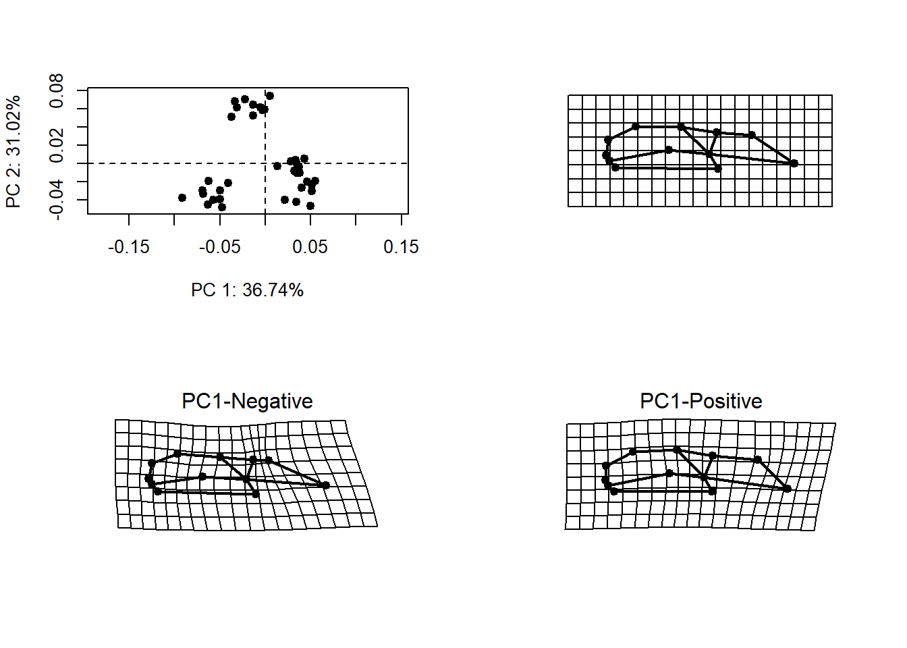
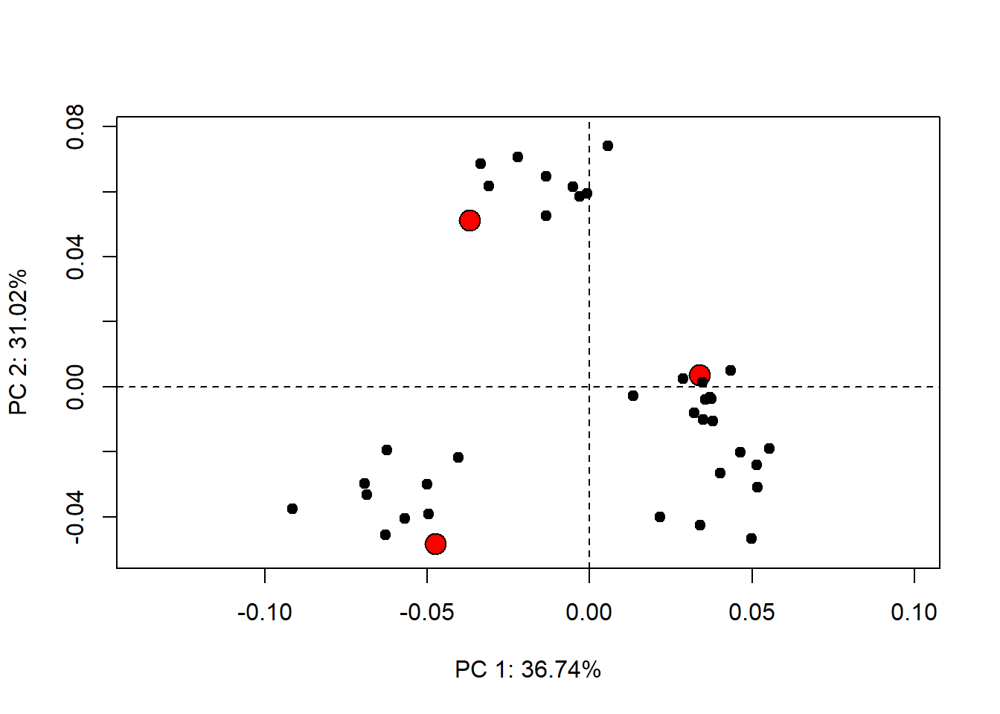
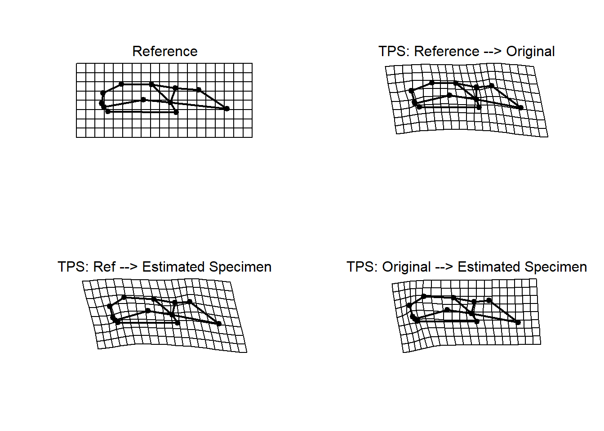
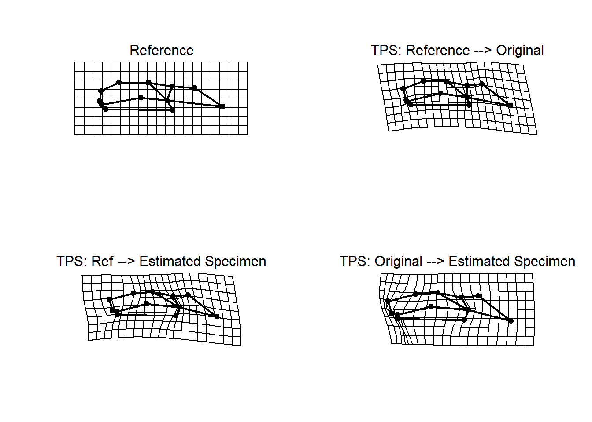
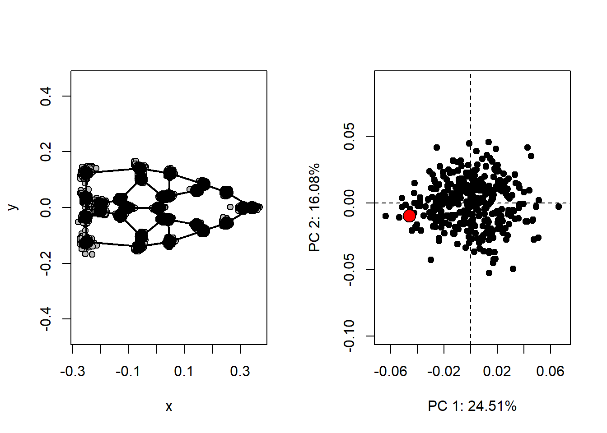
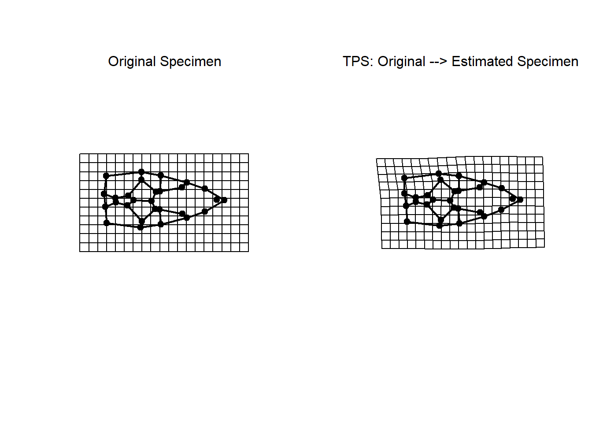

Estimate Missing Landmarks
Dean Adams, Michael Collyer, Antigoni Kaliontzopoulou, & Mark A. Conaway
Introduction
Sometimes, specimens are not fully intact, and there are missing landmarks. For these specimens, one cannot digitize the locations of those points, as they are found in broken, or otherwise absent regions. Because geometric morphometric methods requires objects containing a complete set of landmarks for subsequent analyses (GPA superimposition and downstream statistical assessments), one must do one of the following three options:
- Eliminate all specimens with missing data
- Eliminate all landmarks that are not found on all specimens
- Estimate the locations of missing landmarks in some intelligent manner
Clearly, the first and second options are sub-optimal. Instead we
will estimate the locations of missing landmarks in
geomorph. There are three main ways that have been used to
estimate the positions of missing landmarks:
- TPS interpolation
- multivariate regression
- exploiting symmetry
Methods 1 & 2 are implemented within the
estimate.missing function of geomorph, and the
third can be implemented using the R package Morpho
Estimating missing data using the
estimate.missing Function in
geomorph
The estimate.missing function allows the user to
estimate the locations of missing landmarks using one of two methods; 1)
Thin-plate Spline, and 2) Regression. Here we will show how each of
these methods work, and the results that they generate.
estimate.missing()
This function allows for the estimation of missing landmark data in a set of specimens. Each of the two possible methods requires a reference in order to perform the estimation. The possible arguments, or input values specified by the user, are below:
- \(A\): An array containing landmark coordinates for a set of specimens
- \(method\): Specifies the method that should be used for estimating missing landmarks. The options are “TPS”, or “Reg”. Each will be explained in detail below.
Using Thin-Plate Spline Interpolation
(TPS)
A more general approach is to use thin-plate spline interpolation. Here, one uses the covariation among existing landmarks on one object to infer the position of the missing landmark on the other.
Let’s see an example using the salamander data including with
geomorph:
data("plethodon")
data("plethspecies")
GPA <- gpagen(plethodon$land)
The above figure illustrates the extremes of variation of this
dataset (bottom left and right),as well as its mean shape (top-right).
The estimate.missing function will use this mean shape as
reference. Incomplete specimens will be aligned to the reference, and
the locations of missing landmarks will be estimated using a thin-plate
spline.
Now let’s delete some landmarks from the three specimens highlighted in red:

Finally, let’s estimate the landmarks via the thin-plate spline and compare to the actual specimens:
new.tps<-estimate.missing(shapes.missing,method="TPS")Now plot and compare:

## 1 2 3
## 1 0.00000000 0.07704341 0.08109931
## 2 0.07704341 0.00000000 0.05623248
## 3 0.08109931 0.05623248 0.00000000The numbers above are measures of shape difference (Procrustes
distance). As we can see, this is pretty good also, and does not require
object symmetry.
Using Regression (Reg)
Perhaps the most general approach is to use regression to estimate the locations of missing landmarks. Using the same salamander data:
new.reg<-estimate.missing(shapes.missing,method="Reg")
new.reg<-gpagen(new.reg, print.progress=FALSE)$coordsNow plot and compare:
par(mfrow=c(2,2))
plotRefToTarget(ref,ref,links=plethodon$links)
mtext("Reference")
plotRefToTarget(ref,GPA$coords[,,1],links=plethodon$links)
mtext("TPS: Reference --> Original")
plotRefToTarget(ref,new.reg[,,1],links=plethodon$links)
mtext("TPS: Ref --> Estimated Specimen")
plotRefToTarget(GPA$coords[,,1],new.reg[,,1],links=plethodon$links)
mtext("TPS: Original --> Estimated Specimen")
as.matrix(dist(rbind(t(matrix(ref)),t(matrix(GPA$coords[,,1])),t(matrix(new.tps[,,1])))))## 1 2 3
## 1 0.00000000 0.07704341 0.08109931
## 2 0.07704341 0.00000000 0.05623248
## 3 0.08109931 0.05623248 0.00000000As we can see from the Procrustes distances, this method is even better at estimating the locations of missing landmarks!
Exploiting Object Symmetry
If one’s specimens are symmetric, the locations on one side of the
axis of symmetry may be used to estimate the locations of missing
landmarks on the other side of the symmetry axis. Below is a simple
example (NOTE: we will use the R-package Morpho for
the symmetry-based landmark estimation).
Here is some sample data (lizard skulls)
#read data
mydat<-readland.tps("./Data-figures/LizardShape.tps",warnmsg = FALSE)
inc.shape <- gpagen(mydat,print.progress = FALSE)$coords
mydat <- gpagen(mydat, print.progress = FALSE)$coords
#landmark pairing
land.prs<-matrix(c(13, 14,2,11,15, 16,27, 28,3,10,17,19,4, 9,20, 21,22, 24,25, 26,5, 8, 6 ,7),ncol=2,byrow=T)
#plotPCA
links<-read.table("./Data-figures/lizardlinks.txt",header=T)
ref<-mshape(mydat)
shape.pca <- gm.prcomp(mydat)
col.spec <- rep("black",dim(mydat)[[3]]); col.spec[62] ="red"
sz.spec <- rep(1.0,dim(mydat)[[3]]); sz.spec[62] =2
In the right-hand plot, the red dot represents the location of the specimen (#62) for which we have missing data.
In the above code, land.prs is a matrix identifying the
bilateral pairs of landmarks in this dataset.
land.prs## [,1] [,2]
## [1,] 13 14
## [2,] 2 11
## [3,] 15 16
## [4,] 27 28
## [5,] 3 10
## [6,] 17 19
## [7,] 4 9
## [8,] 20 21
## [9,] 22 24
## [10,] 25 26
## [11,] 5 8
## [12,] 6 7Here we show the missing landmarks:

inc.shape[,,62]## X Y
## 1 0.358795641 1.250158e-04
## 2 0.168067228 8.877281e-02
## 3 0.032826986 4.511770e-02
## 4 NA NA
## 5 NA NA
## 6 -0.251094873 3.265606e-02
## 7 -0.243365354 -3.247129e-02
## 8 -0.237993695 -1.154278e-01
## 9 -0.065715500 -1.382644e-01
## 10 0.029898661 -4.652521e-02
## 11 0.167430767 -8.958667e-02
## 12 0.319641445 3.504307e-03
## 13 0.259497241 5.861418e-02
## 14 NA NA
## 15 0.144292265 6.447751e-02
## 16 0.145964948 -6.813254e-02
## 17 0.011555678 4.339545e-02
## 18 -0.010393806 -4.891806e-03
## 19 0.008404225 -4.346222e-02
## 20 -0.062401338 1.039209e-01
## 21 -0.059651939 -1.068104e-01
## 22 -0.129421710 2.279160e-02
## 23 -0.101289883 -6.032779e-06
## 24 -0.133789681 -2.688542e-02
## 25 -0.192467410 1.208056e-02
## 26 -0.190946529 -1.123231e-02
## 27 0.036363446 1.251641e-01
## 28 NA NAEstimating missing data by exploiting object symmetry
Now let’s estimate the locations of the missing landmarks by their
respective landmarks on the other side of the symmetry axis. Exploiting
symmetry is a biologically-driven manner of estimating missing
landmarks, but is only appropriate for symmetric objects.This is most
easily accomplished using the fixLMmirror function found in
the package Morpho. All that is required is a 3D array of Procrustes-aligned
landmark coordinates with missing data (inc.shape), and a
2-column matrix identifying paired landmark numbers
(land.prs)
fixLMmirror() (Expand for more details)
This function allows you to extract landmark coordinates from a “shapes,” file in your working environment. The possible arguments, or input values specified by the user, are below:
- \(x\): A matrix or an array of landmark coordinates. These can be either 2D or 3D
- \(pairedLM\): A matrix identifying pairs of landmarks (as shown above)
inc.shape <- fixLMmirror(inc.shape, land.prs)Now plot and compare via Procrustes distance with the original:

par(mfrow=c(1,1))
dist(rbind(t(matrix(inc.shape[,,62])),t(matrix(mydat[,,62]))))## 1
## 2 0.02107804The number above is the amount of shape difference expressed as
Procrustes distance.